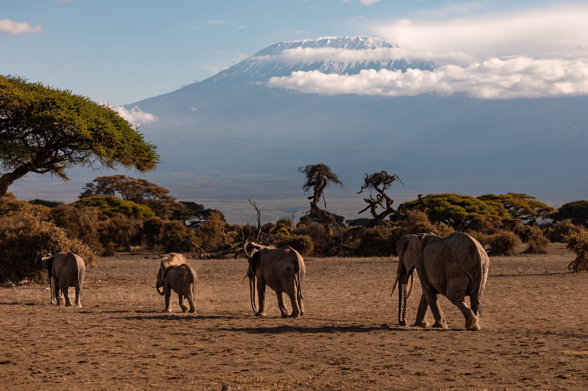
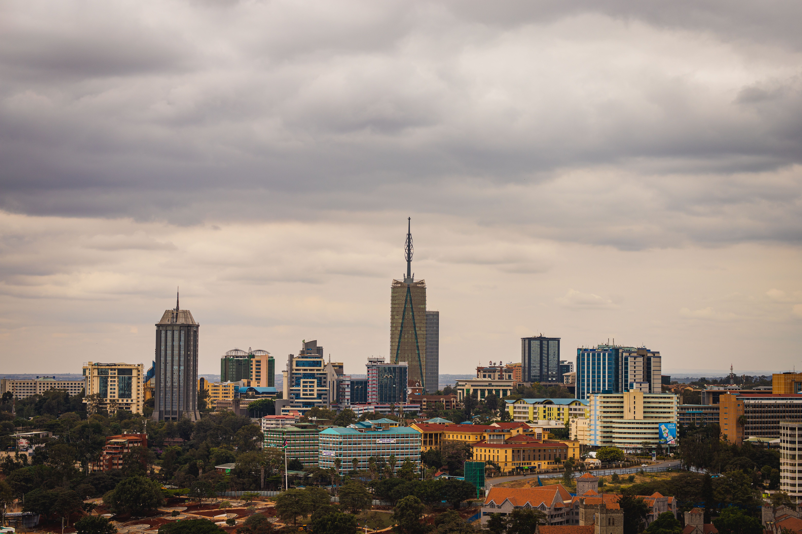

Top Photography Destinations

Maasai Mara National Reserve
Home to the Great Migration and Africa's Big Five, the Maasai Mara is one of the world's greatest wildlife photography destinations.

Amboseli National Park
Capture magnificent elephants walking beneath the snow-capped Mount Kilimanjaro.

Diani Beach
Crystal-clear waters, white sandy beaches, palm trees and unforgettable sunsets.

Mount Kenya
Africa's second-highest mountain offers spectacular hiking trails and panoramic views.

Lake Nakuru National Park
Famous for flamingos, rhinos and picturesque lakeside scenery.

Nairobi City
Experience Kenya's vibrant capital filled with modern architecture, culture and nightlife.